ЕЩЕ ПРО ЦВЕТ
Красный, желтый, зеленый, фиолетовый, синий, коричневый, серый, черный
Весна на носу, так что на теме цвета, может быть, стоит остановиться поподробнее.
Принято считать, что цветовой тест Люшера не действует на художников — оттого, что у них особенное, отличное от обывательского «чувство цвета». Меня же тест Люшера буквально разобрал по косточкам. Я довольно давно работаю иллюстратором, не имея чувства цвета даже в зачатке. Не то, чтобы я этим гордился — напротив, но да, я научился с этим жить. Для меня цвет — досадная помеха игре черного и белого. По-моему, рисунок — это, прежде всего, язык, и для взаимопонимания польза от цвета невелика. Это как в разговоре пропевать слова на разной ноте - красиво, но незачем. Прорисованный травинка за травинкой газон совершенно необязательно еще и покрывать зеленым; даже засохший газон можно нарисовать шариковой ручкой.
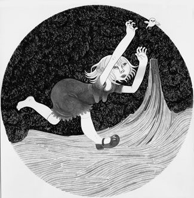
Эмоциональный заряд отдельно взятого цвета самого по себе вещь также относительная. Нетрудно представить открытку на день святого Валентина (сердце, блички, черный бархат) и что-нибудь кровавое a la Олег Пащенко, в одном колорите и с похожей композицией, (с другой стороны, Любовь - кровь, какая разница). Эту лженауку пусть изучают продавщицы в цветочных киосках. Наконец, все люди различают черное и белое, а вот дальтонизм встречается чаще, чем принято считать — так что использовать цвет неполиткорректно. Однако приходится.
В прошлый раз я начал про то, что знать о цветовом колесе неплохо, но ездить на нем одном вовсе необязательно. Как же обойтись без цветового колеса? Современная иллюстрация знает несколько ответов на этот вопрос; какой из них считать правильным; или же как комбинировать которые из них — личное дело каждого. (Стоит, наверное, раз-навсегда оговориться, что при всем моем уважении к, например, журналу Heavy Metal,
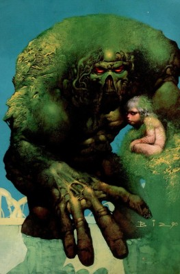
Simon Bisley, и, там, Борису Валледжо (с супругою), речь идет о вполне специфической конъюнктуре современной иллюстрации, причем слово «современной» в данном случае имя нарицательное и обозначает некое обособленное поколение, но не двадцать первый век в целом (см. «Модернизм», например).
Самый простой подход к цвету назовем «детский сад»: трава — зеленая, небо — голубое, и т.д. Цвет несет чисто информационную функцию, помогает распознать нарисованные предметы.
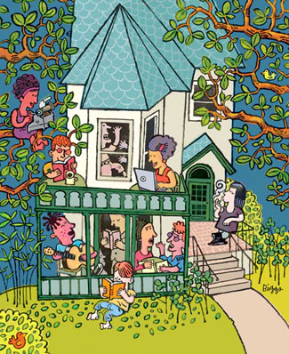
Моё персональное ноу-хау отличается от него только тем, что я использую фотошоповский фильтр Variations, который, среди прочего, позволяет придушить насыщенность цветом — самый простой способ сделать «красоту».
Здесь начинается подход «пугливый».
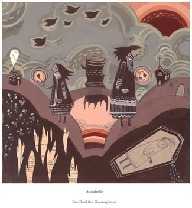
Приверженность одному колориту, мне кажется, верным признаком неуверенности художника в себе. Которая, впрочем, в полном соответствии с моими глубоко поверхностными представлениями о человеческой психологии, может сублимироваться в нарочито жестком рисовании.
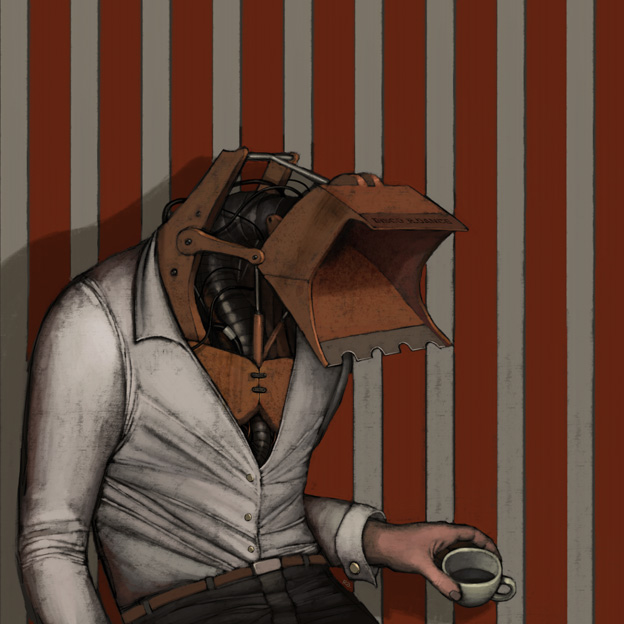
Но правильный иллюстратор не ищет легких путей и даже избегает их.
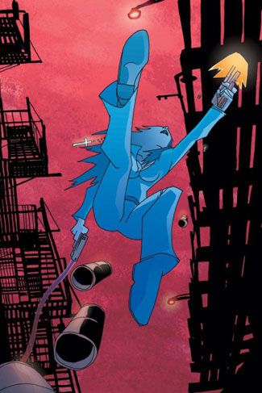
Безопасность таит опасность. Чуть расслабился — и вот ты уже красишь стены серым, или того хуже — рисуешь векторных девиц. Поэтому следующий подход я назову непечатно: е**нутый, sometimes credited as Самый Лучший.
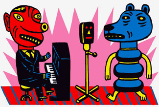
Это, конечно, порождение цифровой эпохи. Теперь можно вплотную сталкивать такие цвета, каких не так давно и вовсе не было в природе, и такими рисовать кистями, что ни в сказке сказать, ни пером описать. Все равно, правда, неясно, что у этих людей в голове.
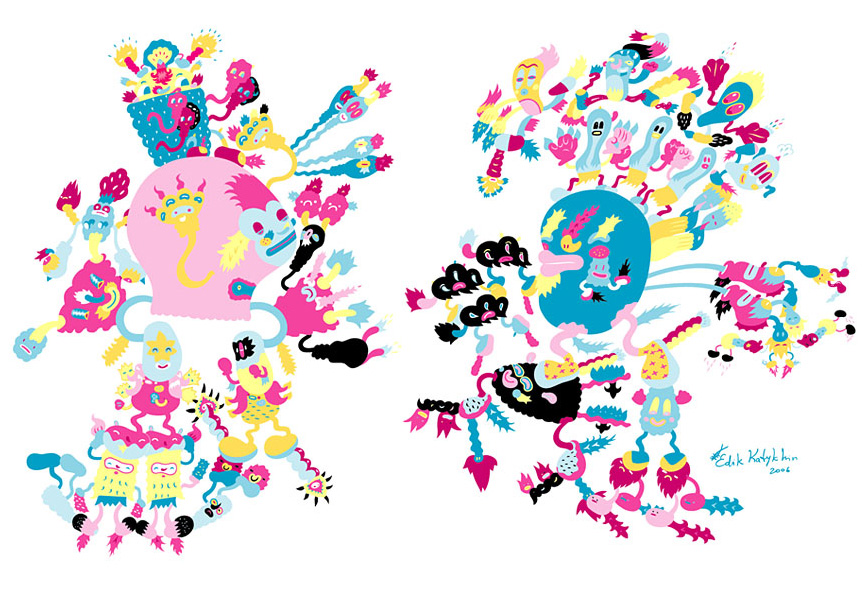
На днях одна прекрасная, но несведущая дама ввергла меня в глубокие раздумья таким вопросом: а вот как, фотошоп, его заряжать не надо? В смысле, краски — они кончаются? О, что тут были бы за колористы, если бы каждый процент циана отзывался им копеечкой.
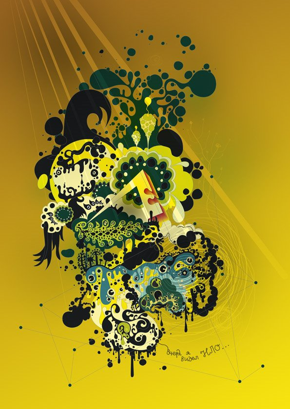
Евгений Киселев полностью распоясались цифровые художники — делают, что хотят.
Говорят (С. Дали, в частности, говорит), будто Пикассо, если не было под рукой синей краски, брал красную, и потом всеми остальными добивался синевы. О какой именно картине шла речь, я вычислить не смог, но то, что добивался — это будьте покойны).
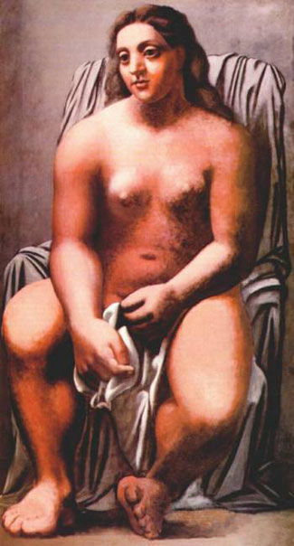
Можно, впрочем, считать е**нутый подход частным случаем метода, который я бы назвал «Методом сильных цветовых решений, продиктованных интуицией» (или вкусом, как хотите). Это, разумеется, самый правильный метод, и вот его-то я бы и поднял на щит, но есть еще один таинственный подход. Магический.
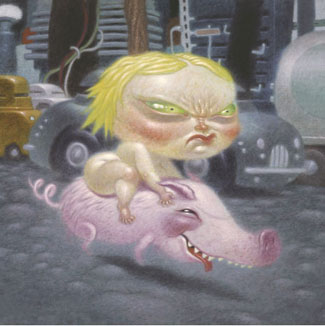
Не ручаюсь, чтобы Дейв Купер умел управлять магической силой цветов, но действуют они на меня именно так.
Здесь приведу случай из собственной уже биографии. Было это лет десять тому назад, я ехал в метро, а напротив меня ехал невысокий человек в роговых очках, лыжном костюме, шапке-гребешком и в усах, никогда не знавших бритвы. Он делал вот что: не вставая с места, а только вытягивая шею, по очереди принюхивался ко всем пассажирам в вагоне. Добравшись до меня, он понял, что я давно за ним наблюдаю, но нисколько не смутился, а пересел ко мне и сказал: ты, я вижу, улыбаешься — а вот послушай, что я тебе расскажу. И началось. Батюшка Ра, безголовые люди, летающие тарелки, красный дракон, черта с рогами, в общем. Меня все это развеселило очень, так что я даже вышел с ним постоять на перроне. Там он вдруг посерьезнел и сказал: смотри. Желтый, белый, коричневый, зеленый, черный, белый…- так минуты две. И потом говорит: ну вот, мол, я тебя слегка почистил, покеда. Рисуй рамочку сверху! Но не снизу! Черным, желтым — но не синим! Вот так:
Последовательность цветов я ,конечно, не запомнил, однако на следующий день или даже позже вдруг понял, что все еще чувствую себя «почищенным». Это могло быть просто хорошее настроение по встрече с занимательным московским характером, но и другого варианта я исключить не могу.